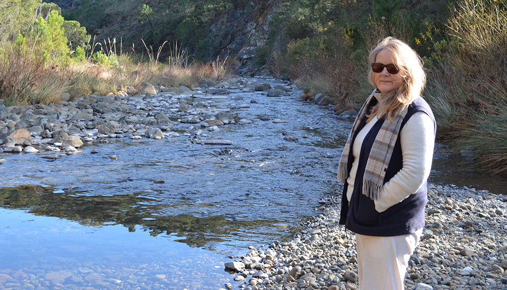

Meet Annabel
I was born in Cheltenham, Gloucestershire, in 1955. Looking back, I had an idyllic childhood in the sense that we were able to roam free in the countryside, and this experience marked my artistic development.
At school I found refuge in the art department secluded from the bustle of a large, busy school, and I was fortunate to have a very demanding but inspirational teacher, Ruth Howell. It was she who encouraged me to pursue art and to apply for a top Arts College.
This led me to the Slade where I studied from 1973 - 1977. Amongst others, my tutors were John Hoyland and Mick Moon, and the director, Sir Lawrence Gowing, encouraged me to travel. As a result of this, I was awarded an intergovernmental cultural scholarship to further my artistic career in Spain. As it turned out, this was to be a turning point in my life.
Why Spain when everyone else was choosing Italy and New York? My original plan was to travel further afield to Mexico, but that particular year there were administrative problems and Spain appeared on the horizon.
Why Andalusia? My diploma exhibition was open to the public and one of the visitors was María de Larrañaga, Condesa de la Foixa , who was setting up an international artistic community in Carmona near Seville. The change to Spain broadened my horizons and my vision, both from the personal and artistic point of view.
I had a barn to paint in and, unrestricted by financial concerns, I was free to work uninterrupted, delighting in the rich impressions of colour and light of Andalusia. The fields of sunflowers, poppies and rich, warm siennas of the earth led me into a new, semi-abstract and expansive way of working with collage.
Keen to be in contact with younger artists, I attended the Seville Art School, Isabel de Hungría, as the scholarship provided access to any art school in the country. The life class was a particular attraction for me as I saw the opportunity to improve my drawing skills.
The original plan was to spend 9 months in Spain, but thirty-four years later I am still here as I met my future husband, Emilio Sújar, at one of these drawing classes. We now live with our son and daughter, Emilio and Zhara, near Marbella on the Mediterranean coast.
